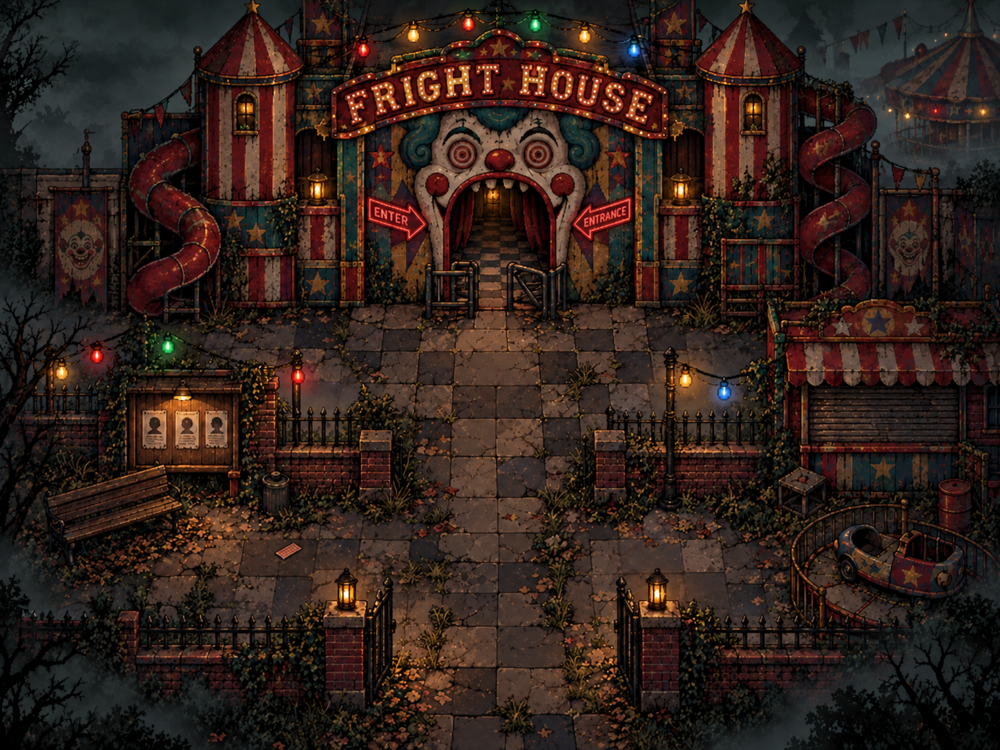
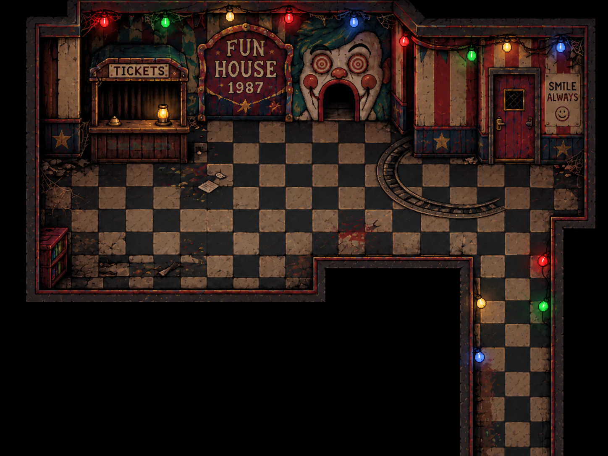
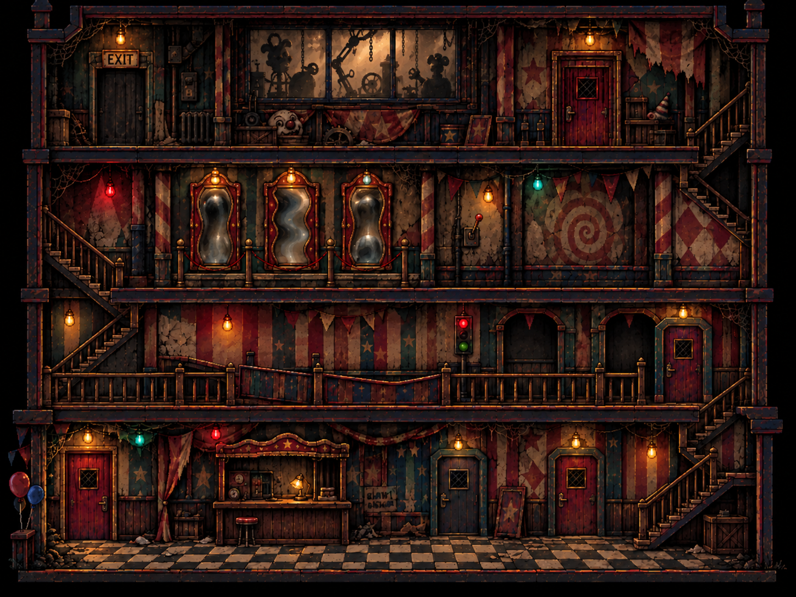
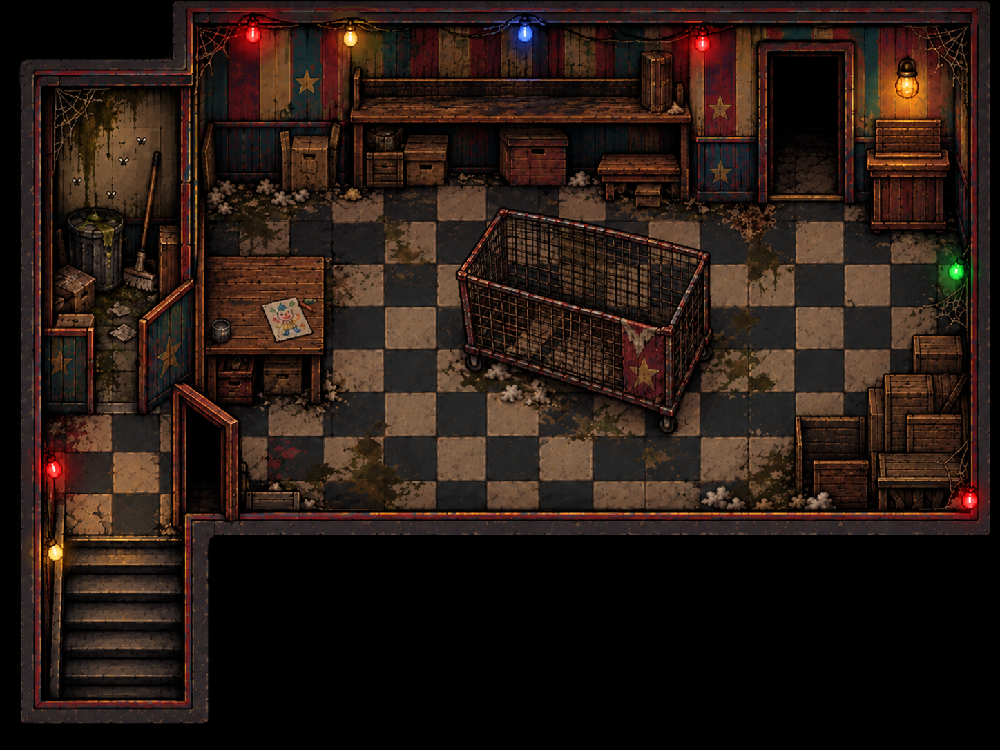

01 / THE STREET
Outside Fright House
Explore the solid bench, kiosk and gates. Inspect the newspaper and ticket, disturb the ravens, then enter the clown’s mouth.
Jump straight into any updated level. Use the quick starts to test a particular encounter without solving the earlier puzzles.

Explore the solid bench, kiosk and gates. Inspect the newspaper and ticket, disturb the ravens, then enter the clown’s mouth.

The teddy watches, the rat runs, balloons pop and flies scatter through the corridor. Search the ledger and lost-property drawer.

Solve the power riddle, climb the stairs and dodge the red-haired clown’s arrows, explosive balloons, spiders and moving machinery.

Large toys crowd a solid crate. Their eyes glow and follow you as the lights fail. Keep moving until the red exit releases.
Move: arrows / WASD · Examine: E · Platformer jump: Space · Climb: ↑ / ↓ · Camera flash: F
Touch controls are available in every level. Pause and retry are beside the game.